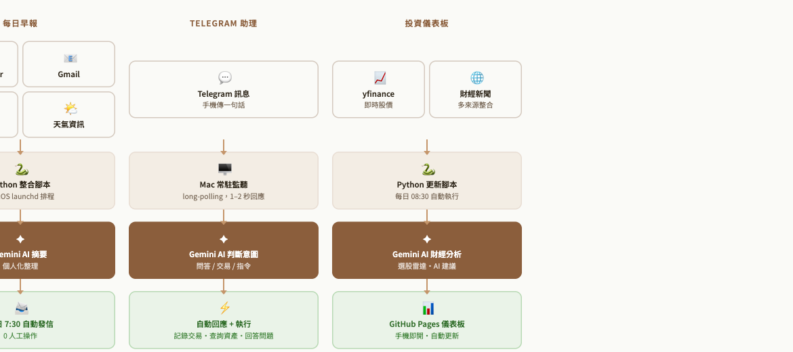
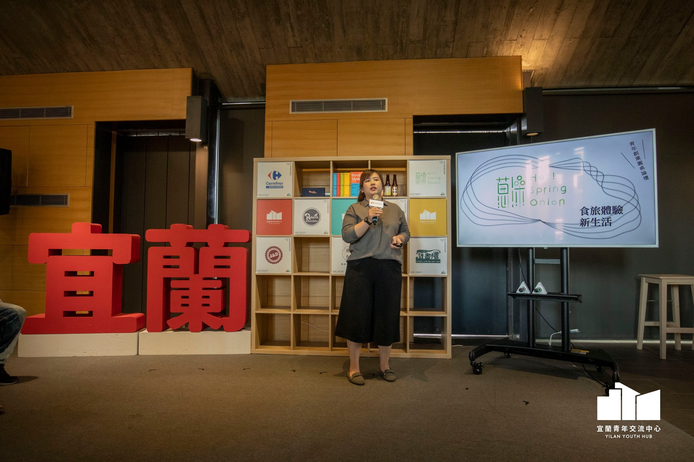

我如何解決問題
從問題診斷、流程設計到方案落地，這是我面對複雜問題時的工作方式。

🔍 系統診斷與流程設計
面對資訊分散、流程卡關或權責不清的問題，擅長透過現況分析、流程拆解與系統規劃找出真正瓶頸，並設計可持續運作的改善方案。

⚙️ 工具整合落地
好的流程需要工具支撐。擅長將需求轉化為實際運作方式，透過系統導入、工具整合與自動化設計，提升執行效率與資訊流通品質。

🚀 從規劃到成果
從構想到正式運作，曾參與溫泉品牌籌備、政府補助申請（累計 140 萬元）及營運改善專案，將規劃真正轉化為可執行成果。